MILDRED LOVES TO ROCK
Favorite Classics
I love all types of music but my go to is rock music. I am addicted to the raw energy that is emitted from the music. Its pure undiluted thrill and power. Some of my favorite bands are Bon Jovi, Guns and Roses, Queen, AC/DC, Kiss and Alice Cooper. Below are a list of my top 20 songs from my spotify Rock playlist in no particular order.
| Song Title | Artist | Album | Year | Album Cover |
|---|---|---|---|---|
| Born To Be My Baby |
Bon Jovi | New Jersey | 1988 | 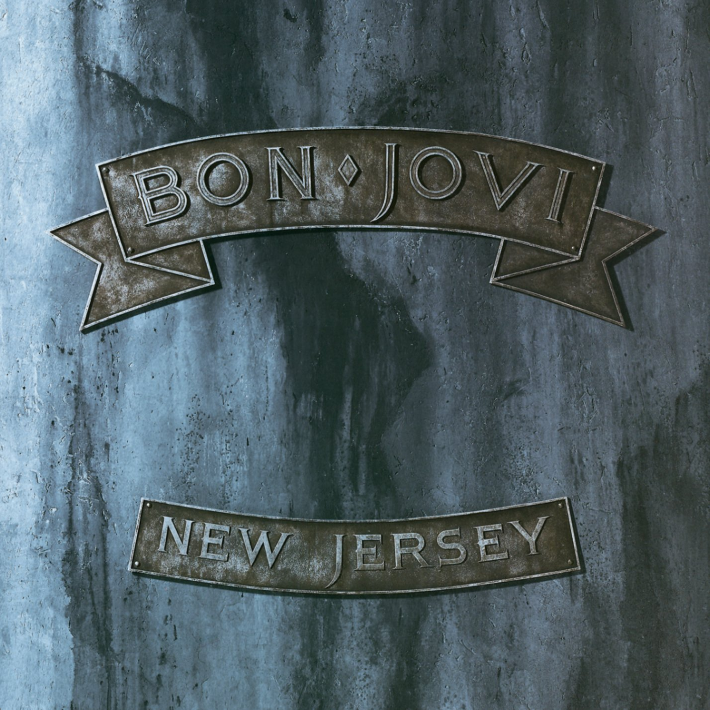 |
| Poison |
Alice Cooper | Trash | 1989 | 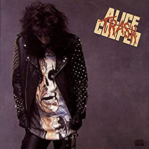 |
| Hotel California |
Eagles | Hotel California | 1976 |  |
| Carry On My Wayward Son |
Kansas | Leftoverture | 1992 | 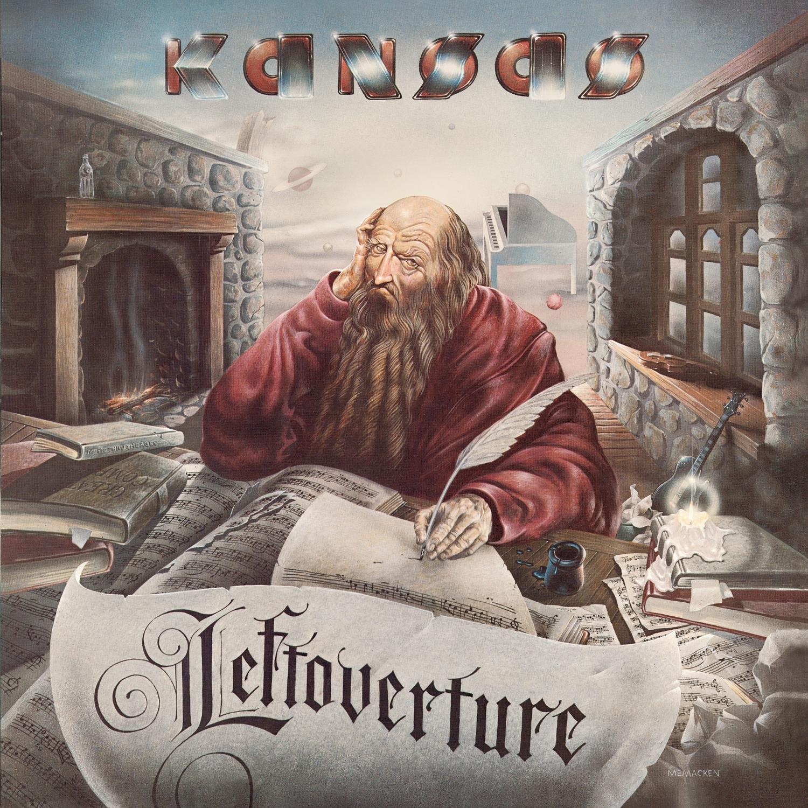 |
| More Than A Feeling |
Boston | Boston | 1976 | 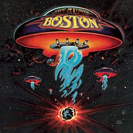 |
| Bohemian Rhapsody |
Queen | A Night At The Opera | 1975 |  |
| Have A Nice Day |
Bon Jovi | Have A Nice Day | 2005 | 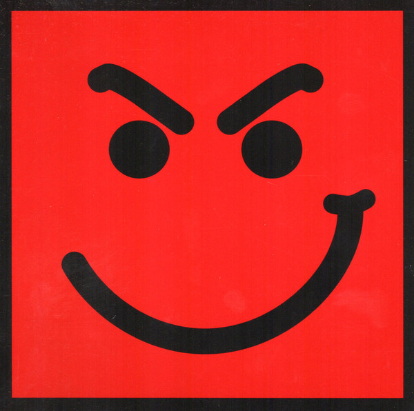 |
| Beggin' |
Maneskin | Chosen | 2017 | 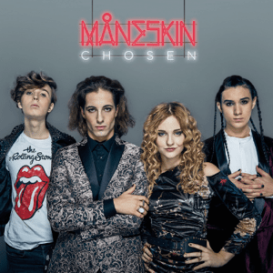 |
| You Shook Me All Night Long |
AC/DC | Back In Black | 1980 | 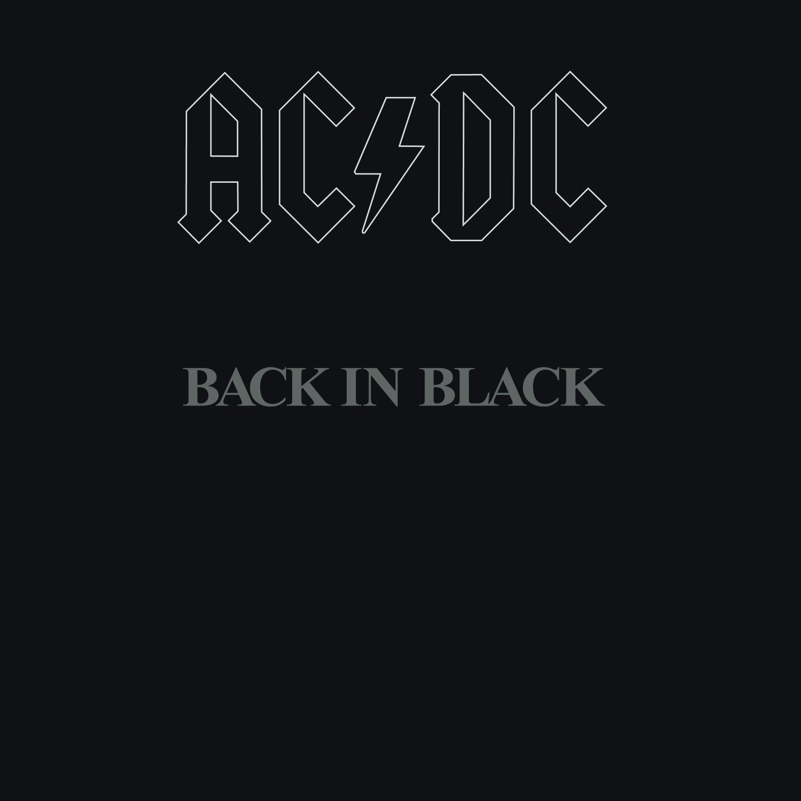 |
| Heaven's On Fire |
Kiss | Animalize | 1984 | 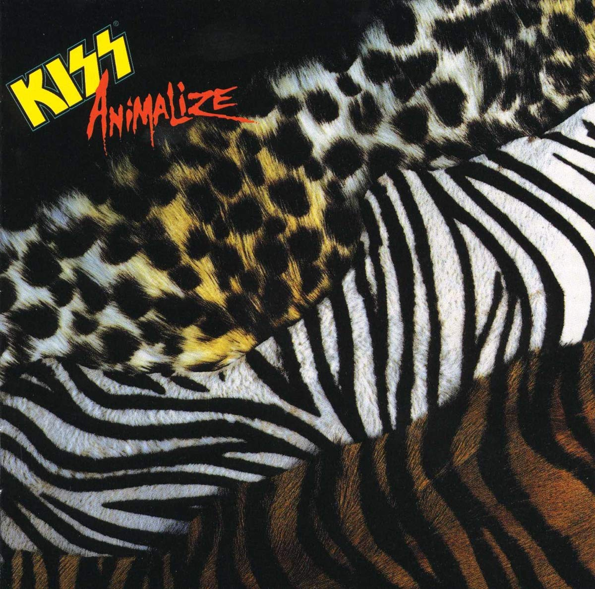 |
| Livin' On A Prayer |
Bon Jovi | Slippery When Wet | 1986 | 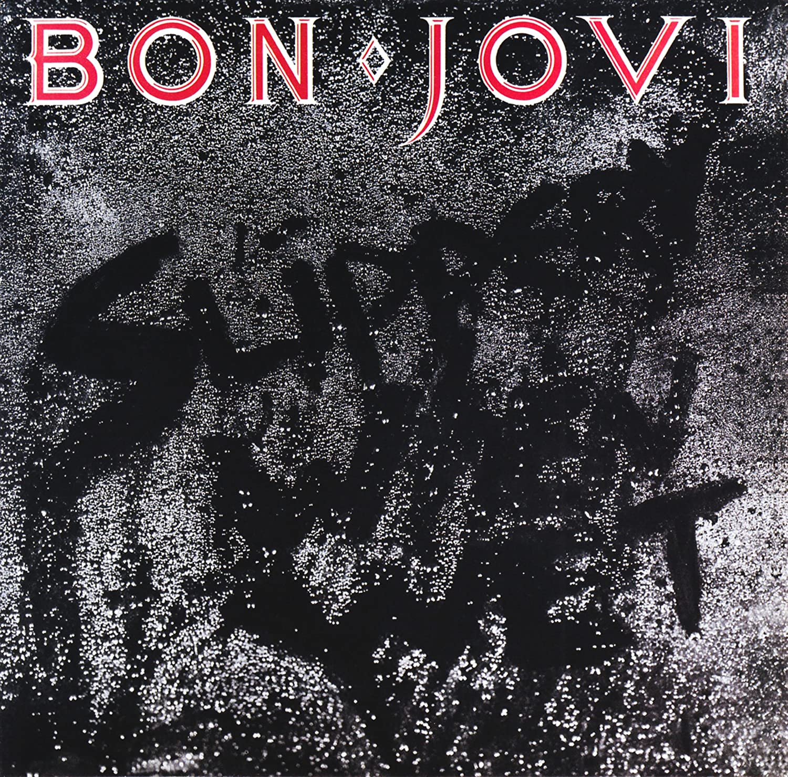 |
| Numb |
Linkin Park | Meteora | 2003 |  |
| Bed Of Roses |
Bon Jovi | Keep The Faith | 1992 | 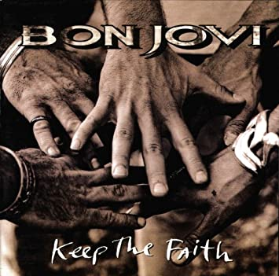 |
| Back In Black |
AC/DC | Back In Black | 1980 | |
| Cum On Feel The Noize |
Quiet Riot | Mental Health | 1983 | 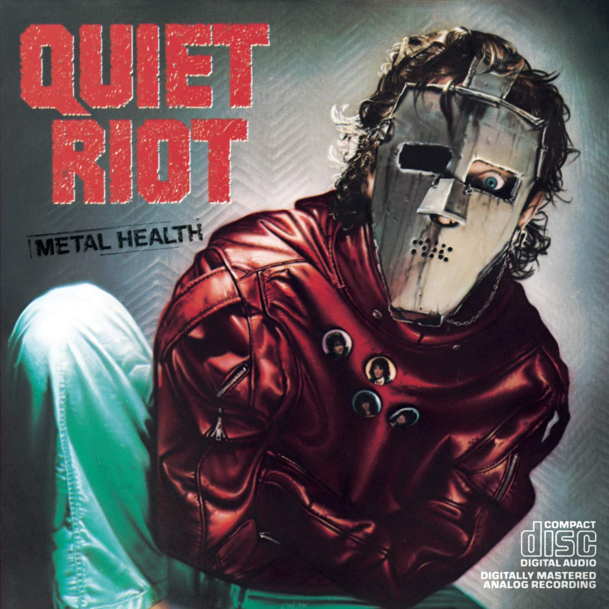 |
| It's My Life |
Bon Jovi | Crush | 2000 | 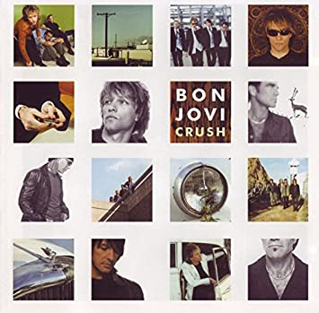 |
| Rock The Night |
Europe | The Final Countdown | 1986 | 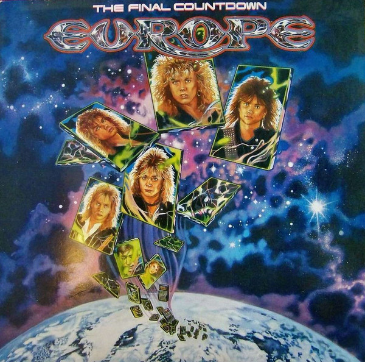 |
| Dude (Looks Like A Lady) |
Aerosmith | Permanent Vacation | 1987 | 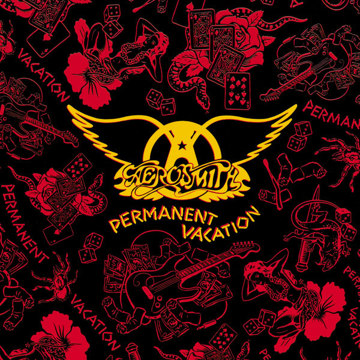 |
| Night Moves |
Bob Seger | Night Moves | 1976 | 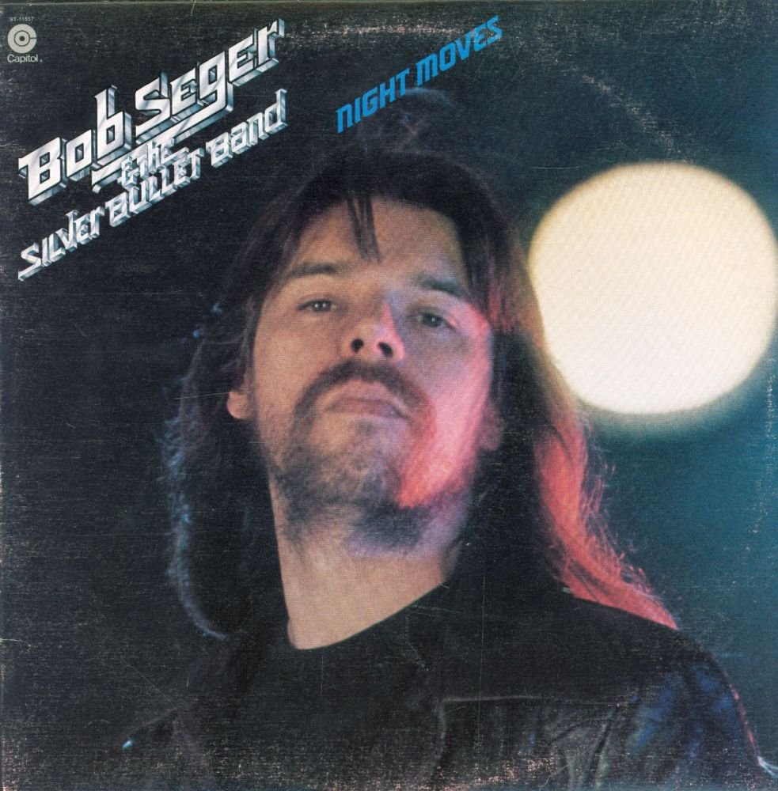 |
| I'll Be There For You |
Bon Jovi | New Jersey | 1988 |